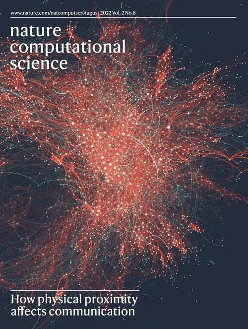
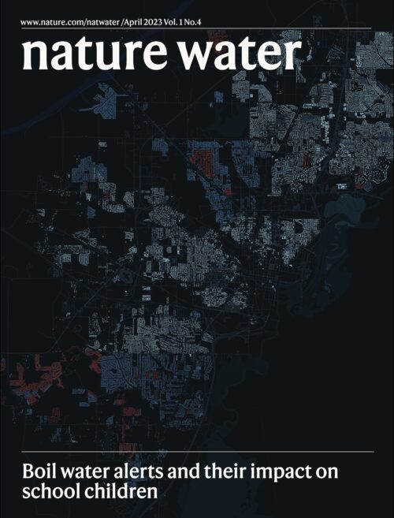
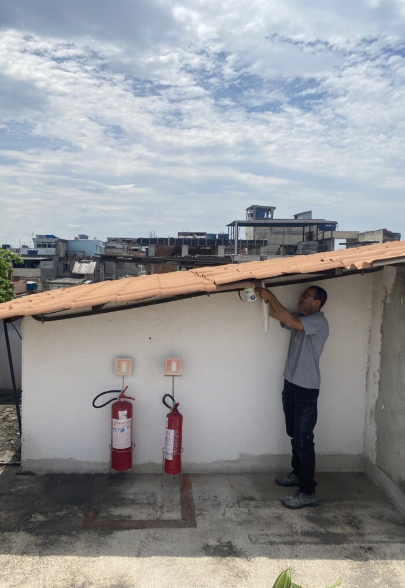
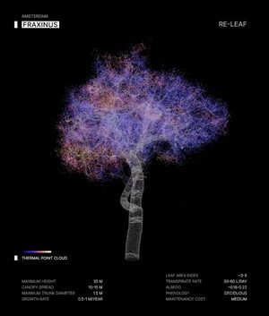
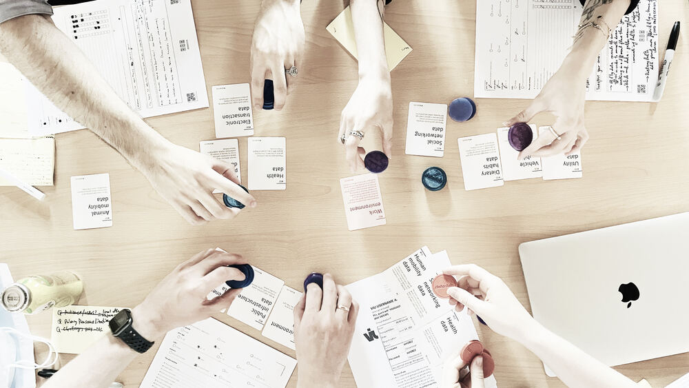
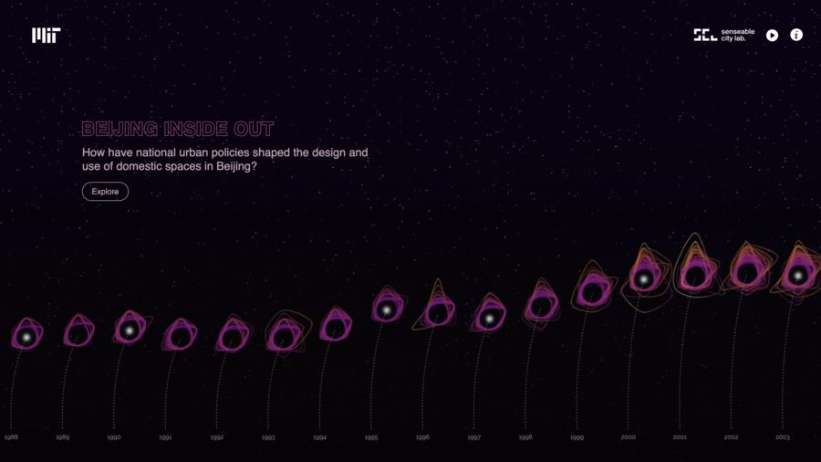
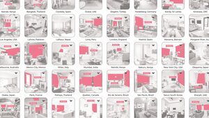
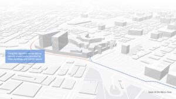
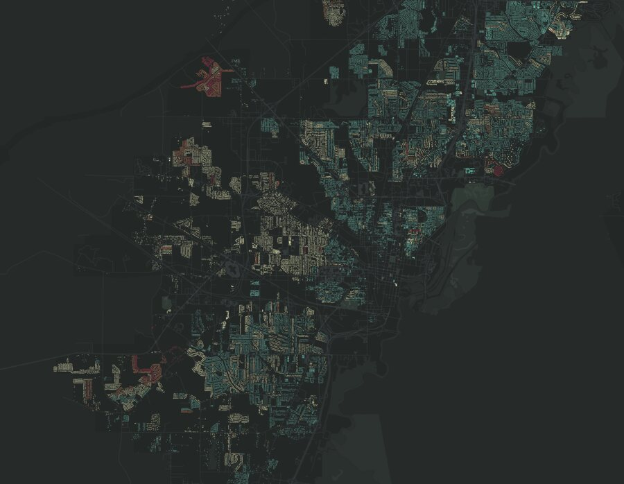
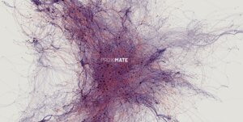

Research Scientist & Global Labs Lead
MIT Senseable City Lab
I develop new ways to observe how people experience cities, and translate that evidence into tools for more responsive, equitable urban design.
I work at the intersection of research, technology, design, and international program building.
Over seven years at MIT Senseable City Lab, my role has evolved from researcher to Research Scientist and Global Labs Lead — building research programs, teams, partnerships, and international initiatives across multiple cities.
I am most interested in what happens when research leaves the paper: when a new way of seeing the city becomes a tool, a collaboration, an experiment, or a decision.
A trajectory from studying cities to building the systems through which they can be studied.
I joined MIT Senseable City Lab in 2019 as a Visiting PhD Researcher. Since then, the scale of my work has progressively expanded — from individual research questions, to interdisciplinary projects, to building and leading international research programs.
Joined MIT through the Roberto Rocca Fellowship, developing research at the intersection of spatial design, urban data, and human behavior.
Developed a research agenda connecting spatial design with computational methods to understand how people experience and use cities.
Expanded this research across scales and urban systems, combining computational methods with questions of mobility, environmental exposure, public space, and human behavior.
From conducting research to building research programs.
Led the development of the Dubai research program from its inception, bringing together research questions, interdisciplinary teams, city and academic partners, data, experimentation, and pathways toward implementation.
From one research program to an international research network.
Expanded this model across MIT Senseable City Lab's global programs, connecting research agendas with distinct urban contexts, institutional partnerships, interdisciplinary teams, resources, and long-term research strategies.
Research prioritization, cross-lab scientific direction, and development of new research opportunities.
Leadership and coordination of 40+ researchers and students across an international network, including hiring, mentorship, resources, and team development.
Coordination of multi-year, multi-million-dollar research programs, provisional budgets, and resource allocation.
Development of collaborations with governments, universities, industry, and local institutions.
Operating models connecting scientific ambition with partner priorities, data ecosystems, dissemination, and long-term program growth.
Consolidated an independent research agenda while expanding leadership across international research programs and interdisciplinary teams.
Research leadership connecting AI, urban systems, design, and implementation.
Today, I combine an independent research agenda with the leadership of interdisciplinary teams and international research programs, connecting computational urban research with design, planning, and real-world implementation.
Alongside program leadership, I maintain an active research practice spanning AI and cities, computer vision, public space, environmental exposure, mobility, and urban health, with work published in Nature Computational Science, Nature Water, Scientific Reports, and Computers, Environment and Urban Systems.
I also work beyond conventional academic outputs — translating research into tools, datasets, digital platforms, visualizations, exhibitions, installations, and public-facing experiences that connect scientific knowledge with planners, decision-makers, communities, and broader audiences.
For me, research does not end with understanding a city. It becomes meaningful when that understanding can inform how cities are planned, designed, and changed.
I build international research programs around real urban challenges—bringing together researchers, cities, universities, data, resources, and local knowledge to produce new evidence and translate it into urban action.
Urban intelligence at the soft edges of the city.
A research program connecting urban sensing, AI and field experimentation to biodiversity, climate, energy, circularity and mobility with city, academic and industry partners.
30+ researchers & collaborators · 30+ talks, workshops & public engagements · 8+ research & strategic partnerships
Explore Amsterdam Lab ↗Designing urban life for extreme climate.
A research program combining AI, computer vision, sensing, and urban experimentation to address thermal comfort, greenery, mobility, environmental exposure, and urban food systems.
~60 km street-level imagery · 20+ researchers & collaborators · 6+ local & strategic partners
Explore Dubai Lab ↗Making the invisible city measurable — with communities.
A research program developing new forms of urban evidence where conventional data are incomplete or unavailable, combining LiDAR, AI, environmental sensing, mobility data, and community-based research.
6 months environmental monitoring · LiDAR + AI · community sensing · mobility data · participatory research
Explore Rio Lab ↗Understanding the social life of public space through AI.
A research program using visual AI and behavioral analysis to investigate how urban design shapes social interaction, attention, and opportunities for encounter amid profound demographic change.
Explore Seoul Lab ↗Evidence for mobility decisions in extreme climate.
A strategic research collaboration using visual AI and mobility data to understand heat exposure, walkability, and short car trips—and translate that evidence into transportation and planning decisions.
* Numbers reflect each program's own stage and shape, not a shared template.
Across these cities, the same research practice has emerged: start with a real urban problem, build what is needed to observe it, and translate that evidence into tools for planning and design.
A selection of projects spanning human behavior, urban health, climate, AI, and design. Each began with a question about how cities work — and developed new ways to observe urban conditions and translate them into evidence for design and planning.
Using the pandemic as a natural experiment, Proximate analyzed digital communication traces to examine what happened to social networks when physical co-location suddenly disappeared. We found that thousands of weak social ties vanished with it, revealing that proximity does more than enable interaction: it helps sustain the social networks that connect people beyond their closest relationships.
Physical space is social infrastructure.
From observing human behavior → to making it measurable.
If spatial conditions shape how people connect, how can these relationships become observable at the scale of cities?

Cover design by Martina Mazzarello, Aug 2022.
Data Slots investigates the trade-off between the perceived benefits of data-driven urban services and concerns around privacy — moving from 80+ countries of online participation to 23 cities of in-person workshops. Technology alone cannot determine what a smart city should measure. Citizens must be part of that decision.
Data-driven planning requires social legitimacy, not only technical capability.
From collecting data → to questioning who defines it.
Making cities observable also raises a question of agency: who decides what should be measured, shared, and considered valuable urban evidence?
In Jackson, Mississippi, we connected boil-water alerts with school attendance to measure how infrastructure failures propagate beyond the water system itself. Days affected by boil-water alerts were associated with a 1–10% increase in unexcused school absences, revealing how unreliable infrastructure can translate into unequal educational and everyday consequences.
Urban infrastructure is also social infrastructure.
From urban systems → to human consequences.
Measuring infrastructure revealed that urban conditions cannot be understood only through performance — their consequences are unevenly experienced across people and places.

Cover design by Martina Mazzarello, Apr 2023.
Urban research traditionally understands cities through streets, buildings, mobility, and census data — yet much of human life happens inside. Using computer vision across 400,000+ interior images from 80 cities, we made indoor environments computationally observable, revealing systematic geographic and cultural differences in how domestic space is organized and inhabited.
AI can reveal dimensions of urban life that conventional planning data cannot see.
AI as an urban observational instrument.
Visual AI showed how previously inaccessible dimensions of urban life can become observable at scale, extending what planners can measure beyond conventional datasets.
Walking Smart combines urban morphology, visual AI, and pathfinding to rethink pedestrian navigation under extreme heat. With only 1.3% additional walking distance, optimized routes increased building shade by 8.9% and reduced sun exposure by 8.8%, showing that pedestrian routing can optimize for thermal comfort rather than distance alone.
Beyond navigation, the same model becomes a planning tool, revealing where pedestrian networks fail to provide thermal comfort and where targeted interventions could improve climate resilience.
Computation can turn environmental conditions into actionable urban decisions.
From measuring conditions → to changing individual choices.
Once environmental conditions can be mapped, computation can help people navigate them — turning urban data into actionable decisions.
Re-Leaf uses street-level imagery and spatially aware visual AI to map urban tree diversity without requiring labeled inventories. Tested across eight North American cities and more than 1.7 million trees, the framework recovers local biodiversity patterns while preserving their spatial organization.
By turning widely available urban imagery into ecological intelligence, the project creates a scalable way to identify dominance hotspots, monoculture risks, and spatial inequalities — helping cities move from simply planting trees to planning more resilient urban forests.
Urban greenery is not only infrastructure to expand. Its diversity can be measured — and planned for.
From individual adaptation → to urban intervention.
But adaptation cannot only help people navigate existing conditions. The next question is how cities can change the environments themselves.
Traveling Tastes uses digital food platforms as a lens into the urban food environment — connecting what food is available, what people choose, and what those choices may mean for health and sustainability.
Across Boston, London, and Dubai, millions of menu items reveal how nutritional quality varies across neighborhoods and relates to socioeconomic conditions and obesity. In Dubai, 2.78 million individual orders show a second layer: people frequently bypass nearby equivalent options, revealing how cuisine, cost, wait time, availability, and neighborhood context shape food-ordering behavior.
The food environment doesn't just reflect a city. It shapes the choices available within it.
From urban environments → to the choices they shape.
The project expanded the question from what cities provide to how availability, accessibility, and urban context influence everyday behavior — and ultimately health.
Shish taouk, tracked — a nutritional snapshot of one dish across the platform.
Conventional monitoring cannot capture street-by-street environmental conditions inside many informal settlements. In Maré, Rio de Janeiro, we developed an open-source sensing network with local communities to measure temperature, humidity, and particulate matter at the scale where people actually experience them.
Rather than simply deploying technology, residents participated in assembling the sensors, selecting monitoring locations, defining field protocols, and operating fixed and mobile units — turning local environmental knowledge into systematic evidence.
From missing data to community-produced environmental evidence.
From using urban data → to co-producing it.
When conventional datasets leave places invisible, producing evidence becomes part of the research itself — and raises questions of participation, ownership, and environmental justice.

Installing an Octopus sensor on a rooftop in Maré.
Brisa+ asks whether urban form itself can reveal where environmental conditions are structurally constrained. Across five favelas in Rio de Janeiro, we combine 3D urban models, solar simulation, morphometric analysis, and computational fluid dynamics to map pedestrian-scale access to sunlight and outdoor ventilation.
Rather than predicting individual health outcomes, the project identifies spatially coherent areas where settlement geometry limits these protective conditions — revealing where in-situ upgrading could be prioritized.
Environmental health is spatial — and urban form can reveal where intervention matters most.
From measuring conditions → to identifying where cities can act.
Once environmental disadvantage becomes visible, urban form can help distinguish where those conditions are structurally constrained — and therefore potentially actionable through planning.
Wearable sensing followed people through their actual movements across Boston/Cambridge and Milan, combining personal PM₂.₅ measurements with mobility and physiological data to reveal how exposure changes across routes and travel modes.
In Milan, walking produced 3.1× higher PM₂.₅ exposure than traveling by car — and an estimated 4.7× higher inhaled dose once ventilation was considered, showing why concentration alone does not capture what a person actually inhales.
Environmental exposure is experienced at the scale of people, not averages.
From citywide conditions → to individual experience.
Wearables connect urban environments, mobility, and physiology, shifting the unit of analysis from city averages to the person actually moving through them.
Open Walks turns everyday smartphone walks into geolocated, AI-analyzed sidewalk accessibility data. Citizens record the city from the pedestrian perspective, while visual AI extracts accessibility conditions — creating a scalable alternative to manual audits.
Across two complementary studies, the project examines both how this approach can scale across cities and when AI-generated accessibility assessments can be trusted to support urban decision-making.
AI should not replace inspection. It should reveal where inspection matters most.
From scaling observation → to building trustworthy AI.
Scaling urban observation is not enough. AI-supported planning tools must also reveal uncertainty and distinguish what can be assessed automatically from what still requires human judgment.
Location Reasoner explores how AI can support complex urban planning decisions by reasoning across spatial data, objectives, constraints, and competing priorities. Rather than producing a single answer, it decomposes planning questions into spatial tasks, evaluates alternatives, and makes the reasoning behind recommendations explicit.
Grounded in real planning scenarios in Abu Dhabi, the project asks a broader question: how can AI move from describing cities to helping people reason about how they should change?
The next frontier of urban AI is not only seeing the city — it is reasoning about what to do next.
From urban evidence → to urban reasoning.
This opens the next phase of my research: designing human-centered AI systems that help planners reason across evidence, objectives, constraints, and trade-offs — while keeping planning judgment and accountability with people.
My research asks how AI can expand our capacity not only to observe and understand cities, but to reason about how they should change. My work has progressively moved from using computational methods to reveal spatial, environmental, and behavioral conditions that are difficult to measure, toward systems that connect this evidence to planning and design decisions.
The next phase of this research advances urban AI from perception to reasoning. I am developing human-centered systems that can reason across spatial evidence, design objectives, constraints, uncertainty, and competing priorities; generate and compare alternative spatial interventions; and make the logic and trade-offs behind those alternatives explicit. Rather than optimizing toward a single answer, these systems can become a design and deliberation medium through which planners, designers, and communities explore possible urban futures while retaining human judgment and accountability.
This shift also creates an opportunity to rethink who participates in producing urban knowledge and making spatial decisions. By combining computational evidence with community-generated data and lived experience, I aim to develop tools that expand local communities’ capacity to represent their environments, articulate priorities, interrogate proposed interventions, and participate in evaluating alternatives. In this sense, human-centered urban AI can contribute to spatial justice not simply by producing better evidence, but by making the processes through which urban choices are formulated more transparent, contestable, and collectively shaped.
My broader goal is to establish AI as a new medium for evidence-driven urban design: connecting observation to reasoning, reasoning to spatial alternatives, and alternatives to collective action. The question guiding this agenda is therefore not simply what can AI tell us about cities? — but how can AI and design expand who has the capacity to reason about, imagine, and shape their transformation?







Selected ongoing research, including preprints and manuscripts under review or submission.
Turning research into teaching, exhibitions, and public talks — the places where the work meets people who will never read the paper.
← Swipe to explore →
Urban Visual Intelligence
Examines how artificial intelligence is transforming the way cities are read and understood — from surveillance footage to satellite imagery — through case studies spanning the United States, Stockholm, Amsterdam, Beijing, Dubai, and Singapore, alongside the ethics of visual surveillance and algorithmic bias.
View at Routledge →